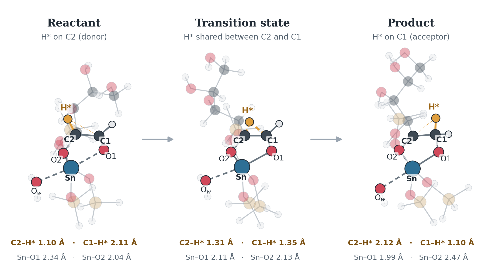
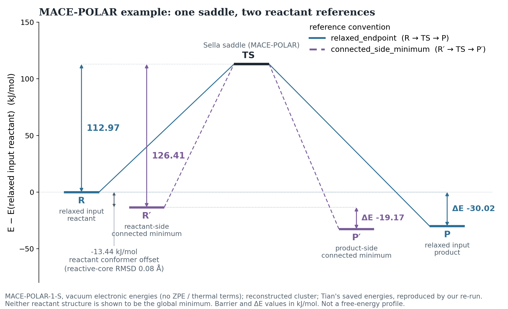
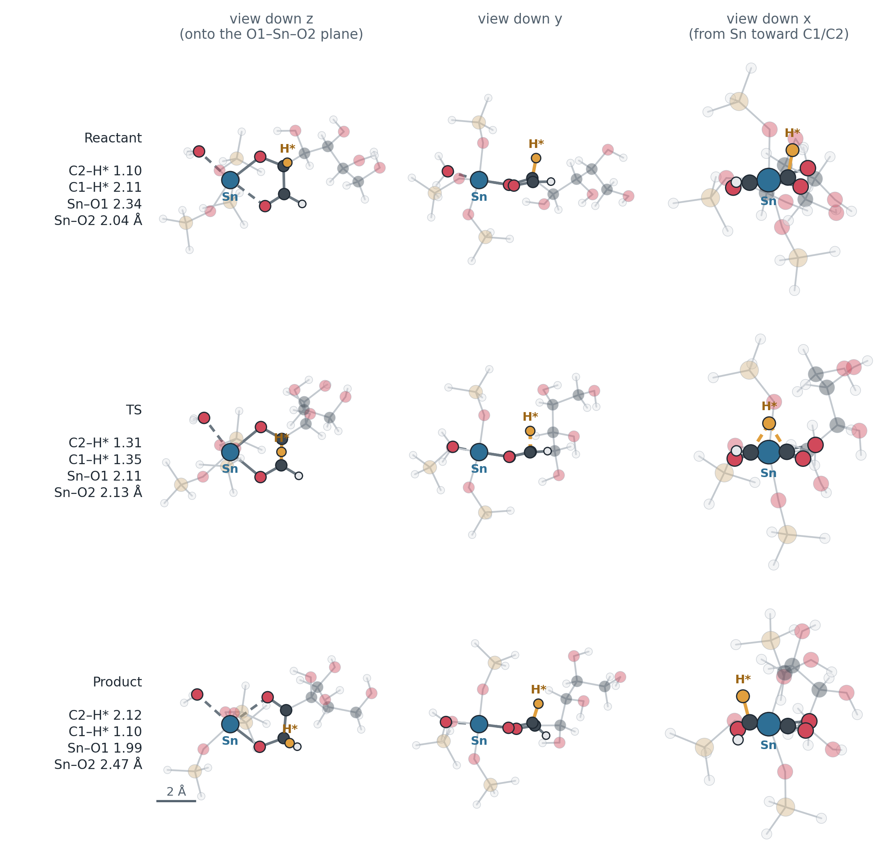

Current work — Sn-β glucose hydride transfer
Two foundation models, MACE-OMOL and MACE-POLAR, both find a certified hydride-transfer saddle on the same reconstructed Sn-β cluster — and disagree on its energetics by 36–41 kJ/mol. Which is closer to DFT is not yet known.
Reconstructed model not literature coordinates; charge 0 / singlet inferred Certified MACE-OMOL-1024 saddle Certified · reproduced MACE-POLAR saddle; Tian’s values reproduced Structurally invalid GFN2-xTB, for barrier comparison Pending accuracy against DFT: Gaussian data not yet received
What “certified” means here A verified first-order saddle on that model’s own potential-energy surface, for this reconstructed cluster with an inferred charge and spin, whose ±imaginary-mode relaxations reach valid reactant-like and product-like minima. It says nothing about accuracy against DFT, and the ±mode check is not an IRC.

site/build_sn_beta_figures.py.
Where things stand: OMOL against POLAR
Both models were run on the same 42-atom cluster, vacuum electronic energies, with the same protocol where it was run. Every barrier below names its reference state, and the two conventions are always shown together.
−40.6 kJ/mol OMOL − POLAR · relaxed_endpoint forward barrier 72.33 against 112.97
−35.6 kJ/mol OMOL − POLAR · connected_side_minimum forward barrier 90.77 against 126.41
? vs DFT which model is closer: not yet known needs Tian’s Gaussian reference calculations, which have not arrived
| Quantity | MACE-OMOL-1024 | MACE-POLAR | OMOL − POLAR |
|---|---|---|---|
| Forward barrier = E(TS) − E(reference reactant) | |||
relaxed_endpointreference: relaxed input reactant |
72.33 | 112.97 | −40.6kJ/mol |
connected_side_minimumreference: reactant-side minimum reached from the saddle |
90.77 | 126.41 | −35.6kJ/mol |
| Reaction energy ΔE = E(P) − E(R), same two references | |||
relaxed_endpoint |
−27.22 | −30.02 | — |
connected_side_minimum |
−4.62 | −19.17 | — |
| The saddle itself, and the reactant conformer | |||
| Imaginary modeexactly one, below −50 cm⁻¹ | −1299cm⁻¹ | −923cm⁻¹ | — |
| Hydride-mode overlapwith the C2–H*–C1 transfer coordinate | 0.72 | 0.75 | — |
| R-side conformer offsetE(relaxed R) − E(R′), see below | 18.4kJ/mol | 13.4kJ/mol | — |
What the comparison shows, and what it does not:
- Both models describe the same hydride-transfer saddle. Each has exactly one imaginary mode dominated by the transferring H, the same Sn–O set at the saddle, and the two saddle geometries differ by 0.40 Å over the whole cluster (0.095 Å for the reactive core). Starting the OMOL saddle search from Tian’s POLAR saddle gives the identical OMOL saddle.
- OMOL puts the barrier 40.6 / 35.6 kJ/mol lower than POLAR, depending on which reference state is used, and it differs most from POLAR in the connected-side reaction energy (−4.62 against −19.17 kJ/mol).
- That does not make OMOL more accurate. A lower barrier is not a better barrier. These are two models on one reconstructed cluster with no reference calculation; DFT is required to decide which model is closer to the target surface.
Is the gap just geometry or path noise?
A fair worry: OMOL and POLAR relax to slightly different structures, so the gap could reflect which geometries were used. The check is to evaluate both models on both sets of saved structures, with single-point energies and no relaxation.
| Energy difference | On POLAR's saved structures | On OMOL's saved structures |
|---|---|---|
| E(TS) − E(R) |
POLAR
113.0 OMOL
OMOL lower by 38 kJ/mol
74.7 |
POLAR
123.5 OMOL
OMOL lower by 51 kJ/mol
72.3 |
| E(TS) − E(R′) |
POLAR
126.4 OMOL
OMOL lower by 33 kJ/mol
93.7 |
POLAR
132.5 OMOL
OMOL lower by 42 kJ/mol
90.8 |
OMOL stays 33 to 51 kJ/mol below POLAR on every structure set tested, so the disagreement is a difference between the two potential-energy surfaces, not just relaxation or path noise. This shows the gap is not a geometry artefact. It does not explain why the models differ, and it does not say which one is right.
Saddle certification is not path convergence
For MACE-OMOL these are two separate facts, and only one of them is good news.
13-image climbing-image NEB
- Did not converge: fmax 0.594 eV/Å against a target of 0.05.
- No converged reaction path or minimum-energy path is claimed.
- Its highest image is only a starting guess: not the transition state and not a barrier.
Sella saddle search from that guess
- Own Hessian: exactly one imaginary mode, −1299 cm⁻¹, overlap 0.72 with the hydride transfer.
- ±mode relaxations reach a reactant-like and a product-like minimum; Sn shell, bound water and hydride state intact on both.
- A different seed, Tian's POLAR saddle, converges to the same OMOL saddle (same energy, RMSD 0.001 Å).
The certification rule is about the saddle only. It requires a converged Sella search, one imaginary mode, a hydride-transfer mode, and valid ± minima; it does not depend on how the starting guess was found. The NEB status is reported next to it and never merged into it.
POLAR: independently re-run through our pipeline
Tian’s MACE-POLAR numbers were first recomputed from his saved raw energies. Our pipeline then re-ran the cheap validation ladder on them:
- The endpoint inputs were already POLAR-relaxed (our relaxation took 0 steps).
- Tian’s saddle was already stationary (fmax 6.9×10⁻⁴ eV/Å; our Sella record is 0 steps).
- Hessian recomputed: one imaginary mode, −923.08 cm⁻¹, overlap 0.75 with the hydride transfer.
- ±mode connectivity recomputed: reactant-like and product-like side minima.
- Barriers reproduced exactly: 112.97 (
relaxed_endpoint) and 126.41 (connected_side_minimum) kJ/mol. - Reaction energies reproduced: −30.02 and −19.17 kJ/mol.
- The POLAR saddle is certified under the same rules as OMOL’s.
One limit on that evidence: because the saddle was already stationary, the Sella record is trivial, so the independent evidence is our Hessian and the ±mode connectivity. The path behind Tian’s saddle was a relaxed scan, not an NEB, and was not re-run.
The reference you measure from matters

audit/tian_tt_test/tian_polar_summary.json, recomputed from Tian’s saved total energies and reproduced by our re-run.This is a scientific result, not a loose end. Moving from the relaxed input reactant R to the TS-connected nearby conformer R′ shifts the reported barrier by:
- 13.4 kJ/mol for POLAR (112.97 → 126.41), and
- 18.4 kJ/mol for OMOL (72.33 → 90.77).
relaxed_endpoint R from connected_side_minimum R′In both models the reactive core barely changes (reactive-core RMSD 0.083 Å for POLAR, 0.019 Å for OMOL), while one backbone torsion, C1–C2–C4–O5, turns by about −70° (POLAR) or −87° (OMOL). Both shifts are above the roughly 10 kJ/mol level we use to call a change material (an analysis threshold, not a universal one). Which nearby reactant structure defines the reference changes the barrier materially, so any comparison must say which one it uses.
R′ is a lower local minimum, reached by relaxing away from the saddle. It is not shown to be the global minimum, and no conformer search has been done. No sampled structure should be read as the global minimum.
GFN2-xTB: a structural negative result
GFN2-xTB cannot be used as a reference for this cluster in vacuum. When the reconstructed reactant is relaxed, the Sn-bound water leaves the metal centre.
audit/omol_benchmark/xtb_sanity__xtb_sanity.json.
Status: structurally invalid for barrier comparison. The reactant loses the water (2.31 → 3.12 Å), so the xTB system is no longer the same chemistry as the MACE ones. The product stays intact, but a barrier needs both ends. We therefore show no xTB barrier, did not run a path search with it, and do not treat xTB as a reference. The failure is loss of Sn coordination, not simply a “bad barrier”.
Which OMOL checkpoint?
A training-subset comparison, not model-size scaling The MACE-OMOL release provides no smaller model: both checkpoints are the same extra-large architecture. The only second checkpoint, trained on a 4M subset of the data, was run through a cheap ladder (relaxation, Sella seeded from the 1024 saddle, Hessian, ±mode connectivity). Barriers move by +0.86 (relaxed_endpoint) and −0.61 kJ/mol (connected_side_minimum); the relaxed-endpoint ΔE shifts by about 6.0 kJ/mol (−27.22 → −21.20) for a reason we have not isolated. This is a small check, not a scaling law, and its saddle was seeded from the 1024 saddle, so it is not an independent path search. Do not over-interpret it.
What is and is not established
Directly demonstrated — from the benchmark run and its saved outputs:
- Two certified saddles. MACE-OMOL-1024 and MACE-POLAR each give a verified first-order saddle, with valid reactant-like and product-like ± minima, on this reconstructed cluster.
- Tian’s POLAR numbers are reproduced by our Hessian and connectivity re-run.
- The two models disagree on energetics: forward barriers differ by 40.6 / 35.6 kJ/mol (depending on reference state), and the gap persists at identical saved geometries.
- The reported barrier depends on the reference conformer: by 13.4 kJ/mol (POLAR) and 18.4 kJ/mol (OMOL).
- GFN2-xTB loses the Sn-bound water in the reactant relaxation.
- OMOL’s 13-image CI-NEB did not converge (fmax 0.594 against a target of 0.05 eV/Å).
Supported interpretation The two models describe the same chemical event (one hydride-transfer saddle with a hydride-dominated imaginary mode) but through different surfaces. The 1024 and 4M OMOL checkpoints agree to within about 1 kJ/mol on the barrier.
Not demonstrated These are not established:
- accuracy against DFT, or which model is closer to it: no reference calculation exists yet
- a converged reaction path for OMOL
- that R′, or any sampled conformer, is the lowest conformer
- that the reconstructed cluster is the original literature geometry, or that the charge and spin (0 / singlet) are the right ones
- any solvent effect, or any free-energy or experimental comparison.
Does the reconstructed chemistry look right?

sweep/sn_beta_hydride/audit/tian_tt_test/structure_views.png; generated by site/build_sn_beta_figures.py.- Hydride on C2 in the reactant (C2–H* 1.10 Å, C1–H* 2.11 Å)
- Shared between C2 and C1 at the transition state (1.31 / 1.35 Å)
- Hydride on C1 in the product (2.12 / 1.10 Å)
- At Sn, O1 and O2 swap roles as intended: Sn–O1 2.34 → 1.99 Å, Sn–O2 2.04 → 2.47 Å
- Six O lie within 2.8 Å of Sn in both endpoints. In the product Sn–O2 (2.47 Å) is just beyond a 2.46 Å bond criterion, so five O are within it: a coordination change, not a neutral swap
- Reconstructed structures: hand-built and relaxed with MACE-POLAR-1-S, not original CPMD coordinates
Pipeline status
| Stage | MACE-OMOL-1024 | MACE-POLAR | GFN2-xTB |
|---|---|---|---|
| Reconstructed R / P | done Tian's POLAR-relaxed endpoints, provenance-labelled | ||
| Structure validation | done composition, atom map, caps, hydride state, Sn shell; 0 errors | ||
| Endpoint relaxation | done | done0 steps: already relaxed | failed structurallyreactant loses Sn-bound water |
| CI-NEB (13 images) | attempted · unconverged, diagnostic | not runTian used a relaxed scan | not run |
| Sella saddle search | done · converged26 steps | done · converged0 steps: seeded at his saddle | not run |
| Hessian | doneone imaginary mode | donerecomputed | not run |
| ±mode connectivity | donenot an IRC | donerecomputed; not an IRC | not run |
| Saddle status | certified | certified reproduced | structurally invalid |
| Gaussian DFT reference | pending data not yet received; nothing is shown or estimated | ||
Next question
The research question Which foundation model is closer to DFT, and how many DFT calculations are actually needed to recover a trustworthy barrier?
Tian’s Gaussian reference calculations have not arrived, and no DFT result appears anywhere on this page. The sequence below is blocked on them:
- Receive Tian's Gaussian reference calculations along R → TS → Pwaitingthe parser and analysis code exist but have only been tested on synthetic fixtures, never on real Gaussian output
- Compare OMOL and POLAR energy errors against DFT along R → TS → Pafter 1
- Compare force RMSE, force magnitudes and cosine similarityafter 1
- Identify where the model error concentrates (reactive core, Sn site, spectators)after 1
- Test uniform against TS-enriched sparse DFT labelling; TS-enriched is a hypothesis, not an assumptionafter 1
- Measure barrier error against the number and location of DFT calculationsafter 1
- Only later, launch blind MACE metadynamicslaterreadiness checklist only; no MACE metadynamics has been launched
Background and provenance
Reference. S. H. Mushrif, J. J. Varghese, C. B. Krishnamurthy, Solvation dynamics and energetics of intramolecular hydride transfer reactions in biomass conversion, Phys. Chem. Chem. Phys. 17, 4961–4969 (2015), DOI 10.1039/C4CP05063K.
The immediate experiment is narrower than the original study: whether these models give a physically meaningful transition pathway between known initial and final states, initially without reproducing the full explicit-solvent metadynamics.
The reconstructed model. Tian built a 42-atom vacuum model by hand: open-chain glucose bound to a SiH₃-capped Sn site, C₆H₂₂O₁₀Si₃Sn, interpreting the literature drawing. He relaxed it with MACE-POLAR-1-S and ran a relaxed scan, a Sella saddle search and a Hessian. These are not the paper’s coordinates. The neutral singlet charge state is an inferred model choice, not literature-confirmed.
Sources: audit/omol_benchmark/ (curated benchmark results), OMOL_BENCHMARK_REPORT.md, audit/tian_tt_test/ (tian_polar_summary.json, input_validation.json, structure_views.png) and input/tian_tt_test/provenance.json.
Why new foundation models
MACE-OFF23, used for the Diels–Alder benchmark, was trained on organic chemistry and has no tin. MACE-OMOL-0 and MACE-POLAR-1 cover elements up to Z = 83, Sn included, and both take the system’s total charge and spin multiplicity as inputs. MACE-POLAR adds long-range electrostatics. This is the first test of the project’s pipeline on a catalytic, metal-containing system.
Pipeline and checks
Exercised on the real cluster by this benchmark:
- Strict structure validation that refuses to start a calculation on invalid input
- Endpoint relaxation, CI-NEB, Sella saddle refinement, mass-weighted Hessian (standard) and ±imaginary-mode connectivity
- Barriers and reaction energies always reported against a named reference state — the relaxed input endpoints, or the minima connected to the saddle
- Total charge and multiplicity always set explicitly; the models otherwise default silently to a neutral singlet
- GFN2-xTB as a third method under the same protocol (used here as a structural check)
Added with the benchmark, after review:
- A saddle is certified only with a converged Sella search on record, one imaginary mode, a hydride-transfer mode, and valid ± minima
- Each ± side minimum must keep its Sn shell, bound water, heavy-atom bonds and hydride state relative to the input structure; an invalid side gives no reference energy
- NEB status is reported separately from the saddle label, so an unconverged NEB can never be mistaken for a converged path
Built, tested on synthetic fixtures only Gaussian-log ingestion, DFT-against-MACE energy and force metrics, and a sparse-DFT-label experiment framework. They have never been run on real Gaussian output. A metadynamics readiness checklist exists; no MACE metadynamics has been launched.
Blocked on authoritative information
Work in progress The production configuration for authoritative structures still stops before loading a model, by design, until these are supplied:
- Authoritative reactant coordinates
- Authoritative product coordinates
- Total charge
- Spin multiplicity
- Atom mapping (which atoms are C1, C2, the transferring hydride, Sn, and the coordinating oxygens)
- The original CPMD collective-variable parameters d₀, p, q
- Fixed / capped-atom policy for the cluster model
- The intended solvent / cluster representation for this experiment
What the literature does and does not establish
The paper itself is closed access and has not been read in full; the points below come from its abstract and from a thesis that reproduces its Fig. 1 (M. A. Y. Ali, MSc thesis, University of Alberta, 2025). Nothing here has been checked against the paper’s full text.
- Literature Protocols. The paper uses CPMD-metadynamics with explicit water or methanol, a CPMD-metadynamics run without solvent, and implicit-solvent DFT (abstract). The thesis’s own dataset is a 20,000-timestep gas-phase run; whether it is the paper’s solvent-free run is not established.
- Literature, as drawn Model. The thesis figure adapted from the paper draws the site as a SiH₃-capped Sn cluster, Sn(–O–SiH₃)₃, with open-chain glucose bound through its C1 and C2 oxygens and the water formed at the site remaining on Sn.
- Literature, secondary Collective variables. CV1 is the coordination number of C1 with the two hydrogens H1 and H2; CV2 is the coordination number of C2 with the same two hydrogens, using CPMD’s rational coordination function.
- Unknown CV parameters d₀, p, q. The project’s code computes these CVs with placeholder parameters that are explicitly flagged as unconfirmed, and refuses to compare against the reference basin values until the originals are supplied.
- Unknown Charge and multiplicity — not stated in either source.
Not a reference value The “≈82 kJ/mol barrier” sometimes quoted for this reaction comes from data tips on the thesis’s gas-phase metadynamics free-energy plot, not from a verified published value. It is a free-energy difference from a biased-sampling run; an endpoint-to-endpoint NEB or Sella calculation gives a potential-energy barrier, and the two are not directly comparable. It is not used here as ground truth.
The code and its tests are in sweep/sn_beta_hydride/, with the full literature audit in its README.